Membrane Quick Summary
Structure, permeability, diffusion, osmosis, active transport & phagocytosis. (Exercises omitted.)
layers Fluid mosaic model 流動鑲嵌模型
Fluid 流動
The phospholipid bilayer 磷脂雙層 is fluid: phospholipids and embedded proteins can move laterally 橫向移動. This gives the membrane flexibility 靈活性.
Mosaic 馬賽克
Membrane proteins 膜蛋白 are embedded in a mosaic pattern — scattered among phospholipids rather than forming one uniform layer.

Differential permeability 差異滲透性
Like water 似水: polar 極性 molecules are water-soluble (hydrophilic 親水). Like oil 似油: non-polar 非極性 molecules are lipid-soluble (hydrophobic 疏水).
| Substance | Examples | Movement across membrane |
|---|---|---|
| Small, non-polar 非極性小分子 | O₂, CO₂, fatty acids 脂肪酸, glycerol 甘油 | Through phospholipid bilayer |
| Small, polar 極性小分子 | Water, amino acids 胺基酸, glucose 葡萄糖 | Via proteins (channels/carriers) |
| Small ions (charged) 帶電荷小離子 | Na⁺ 鈉, Ca²⁺ 鈣 | Via proteins |
| Large molecules 大分子 | Starch, triglycerides 三酸甘油酯, proteins 蛋白質 | Membrane folding (e.g. phagocytosis) — not simple diffusion |
warning Common mix-up: glucose & ions do not cross the bilayer directly — they need membrane proteins.
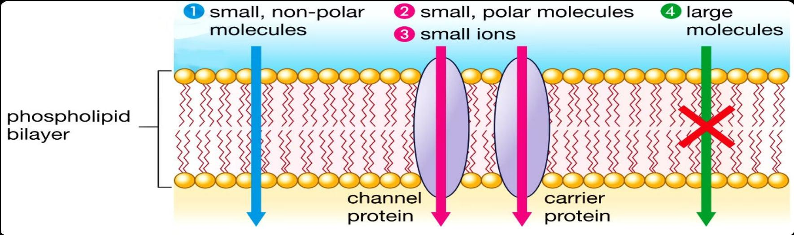
Phospholipid bilayer 磷脂雙層
Hydrophilic 親水 head (phosphate group) + hydrophobic 疏水 tail (fatty acid tails) → in water, phospholipids form a “tail-to-tail” bilayer: hydrophobic tails face inward; hydrophilic heads face aqueous environments on both sides.
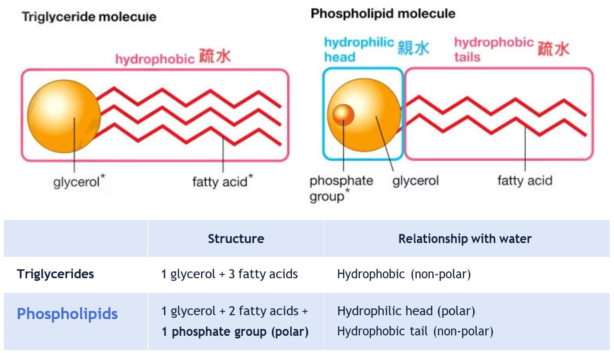
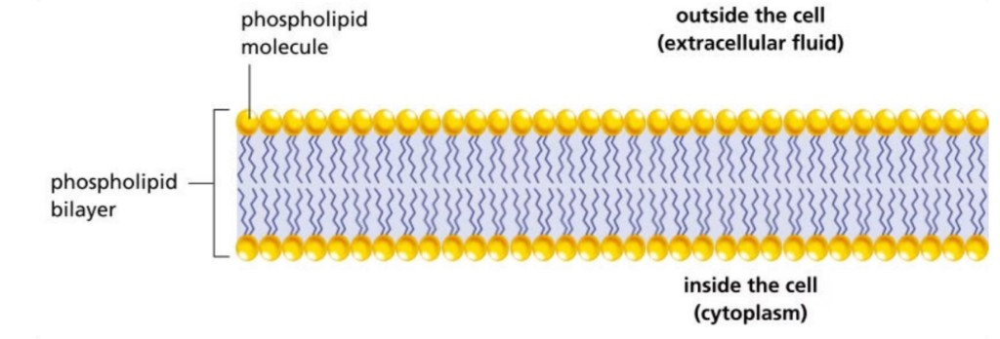
Membrane proteins 膜蛋白
| Type | Function |
|---|---|
| Enzymes 酶 | Speed up chemical reactions on the membrane |
| Channel proteins 通道蛋白 | Provide channels for water-soluble molecules (do not transport by shape change) |
| Carrier / transport proteins 輸運蛋白 | Transport substances by shape change; energy from respiration 呼吸作用 when active transport |
| Receptor proteins 受體蛋白 | Like a “card reader” — bind 結合 specific chemical messengers (e.g. hormones) to regulate cell activities |
| Glycoproteins 糖蛋白 | Like an “ID card” — act as antigen 抗原 for cell identification |

Factors damaging the cell membrane
“Juice leaked 漏汁” = membrane damaged — cell contents escape.
| Factor | Phospholipids 磷脂 | Membrane proteins 膜蛋白 | Examples |
|---|---|---|---|
| Organic solvents 有機溶劑 | Dissolve lipid bilayer | Denature 變性 | Ethanol 乙醇, alcohol 酒精 |
| Detergents 清潔劑 | Dissolve lipid bilayer | Break protein–lipid interactions | Soap 肥皂 |
| Extreme pH | Destabilize lipid bilayer | Denature | Stomach acid |
| High temperature | Destabilize lipid bilayer | Denature | Boiling |
| Mechanical stress 機械應力 | — | — | Pressure; excessive water entering cells |
Application: use these factors to kill harmful microorganisms (e.g. bacteria).

Overview of membrane transports
| Membrane transport | Direction / description | Energy needed? | Membrane needed? | When net 淨 movement stop? |
|---|---|---|---|---|
| Diffusion 擴散 | Along concentration gradient 濃度梯度 (high to low conc) | Passive 被動 | No | When equilibrium 平衡 (no conc. gradient) |
| Osmosis 滲透 | Water molecules across a differentially permeable 差異滲透性 membrane along water potential 水勢 gradient | Passive 被動 | Yes (living or dead) | When water potential is equal on both sides |
| Active transport 主動運輸 | Against conc. gradient, or along conc. gradient but faster | Active 主動 | Yes (living) | No energy — e.g. inhibited respiration 抑制呼吸; killing the cell |
| Endocytosis 內吞作用 / Phagocytosis 吞噬作用 | Engulfing 吞入 by membrane folding into vesicles 囊泡 | Active | Living | — |
| Exocytosis 外排作用 | Transport out by vesicle fusion | Active | Living | — |
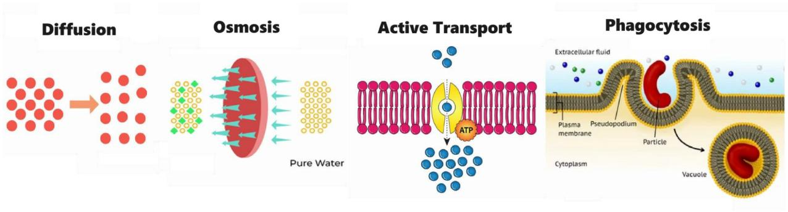
Concept of net 淨 movement
Equal rates → no net movement
▶ 10 molecules ◀ 10 molecules
Molecules still move, but there is no net change in concentration on either side.
Unequal rates → net movement
▶ 10 molecules ◀ 5 molecules → net ▶ 5
No net movement ≠ no movement!
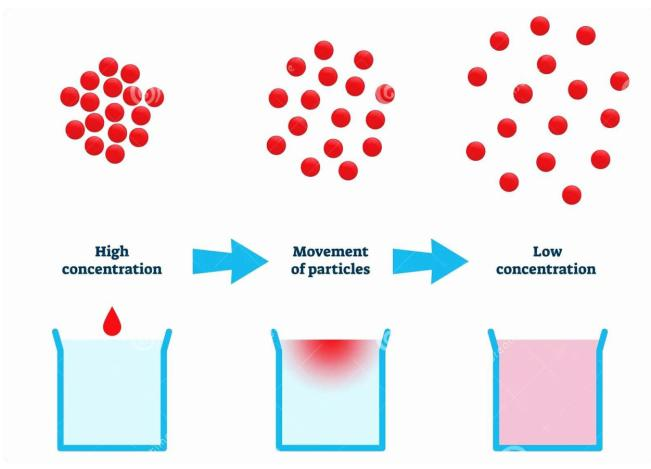
Diffusion 擴散作用
Definition: Net movement of molecules from a region of higher concentration to lower concentration until equilibrium.
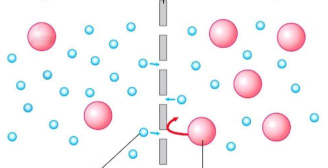
Factors that speed up diffusion (to reach equilibrium faster)
e.g. movement of intestine 腸; remove materials by capillaries 微血管
Highly-folded 高度折疊 structures (e.g. microvilli)
Thin walls, “one-cell-thick”
Higher kinetic energy 動能 of molecules
CO₂, O₂ diffuse faster than glucose (C₆H₁₂O₆). Lipids via bilayer; amino acids via membrane proteins.

Osmosis 滲透作用
Formal definition (align with notes)
Osmosis is the net movement of water molecules across a differentially permeable 差異滲透性 membrane
from a region of higher water potential 水勢 to a region of lower water potential.
水分子穿過差異滲透膜，從水勢較高的區域向水勢較低的區域的淨移動
Requirements
- Differentially permeable membrane
- Water potential difference between two regions
Water follows solute! 水跟溶質走
More solute → lower water concentration → lower water potential. Net water moves toward the side with more solute (lower ψ). Osmosis is passive 被動 — no energy required.
| Region | Solute | Water potential ψ |
|---|---|---|
| Less solute (more dilute) | Lower solute concentration | Higher ψ (e.g. pure water ≈ 0) |
| More solute (more concentrated) | Higher solute concentration | Lower ψ (more negative) |
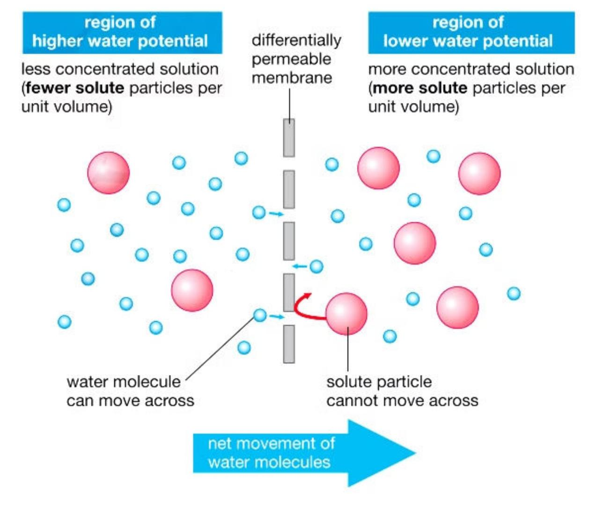

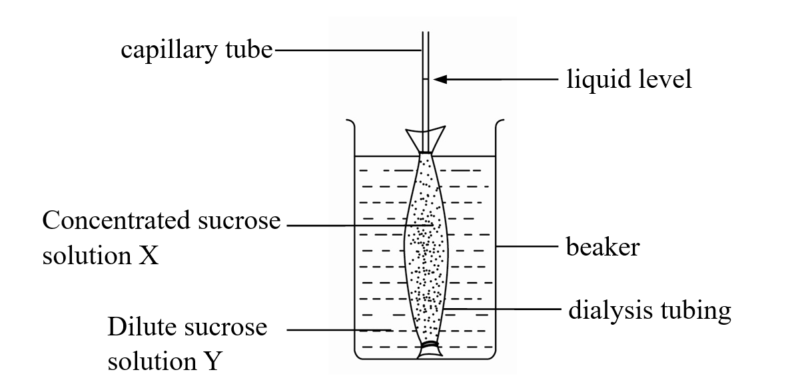
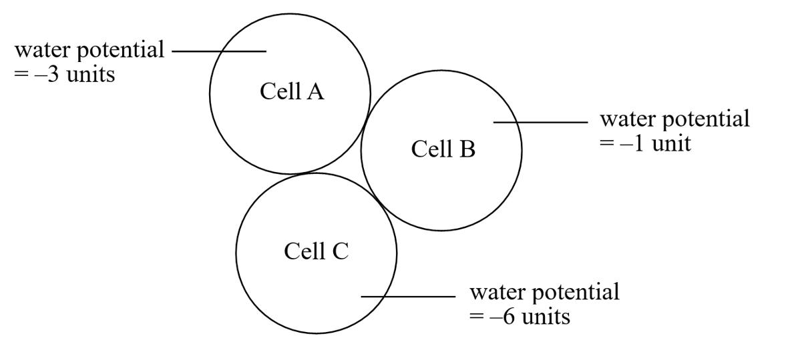
Applied examples (from notes)
- Setup A (intact membrane + distilled water): differentially permeable ✔, ψ difference ✔ → osmosis yes; net water into cylinder (▶) → cylinder becomes longer, heavier, less dense
- Setup B (“juice leaked”, damaged membrane): osmosis no — membrane no longer differentially permeable
- ψ of distilled water: 0 / highest; ψ of beet root cells: negative
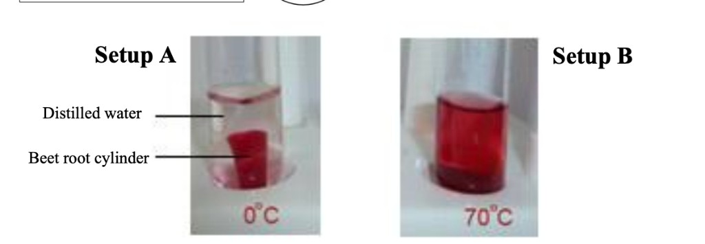
- Concentrated salt solution (lower ψ): water moves out → egg shrinks
- Tap water (higher ψ): water moves in → egg expands
- Shell removed because shell is not permeable to water
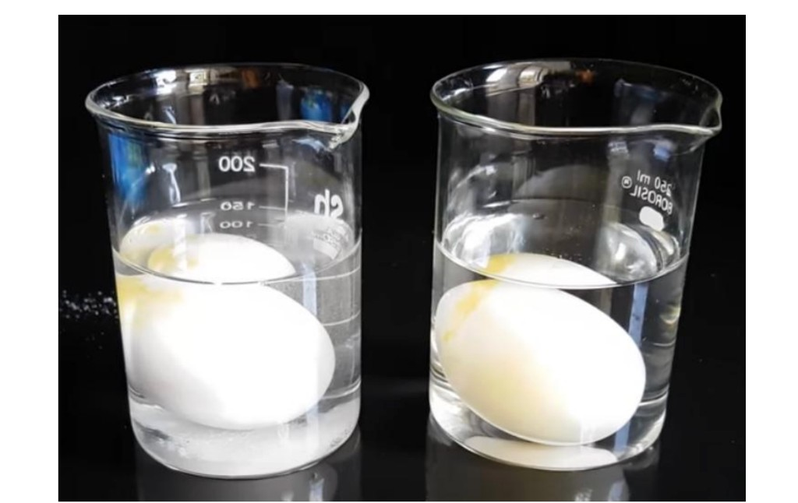
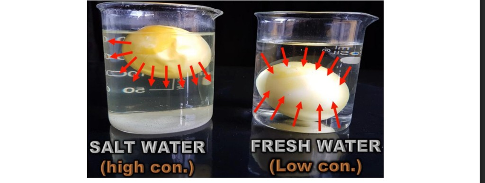
Sucrose concentration order (notes): B > A > C. B = crenation (hypertonic); A = normal; C = swelling/haemolysis (hypotonic).
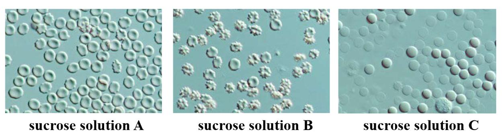
X inside tubing, Y outside. Mass of the tubing: 12.0 g → 9.5 g means water left tubing → outside more concentrated (e.g. X 10% sucrose, Y 5% sucrose).
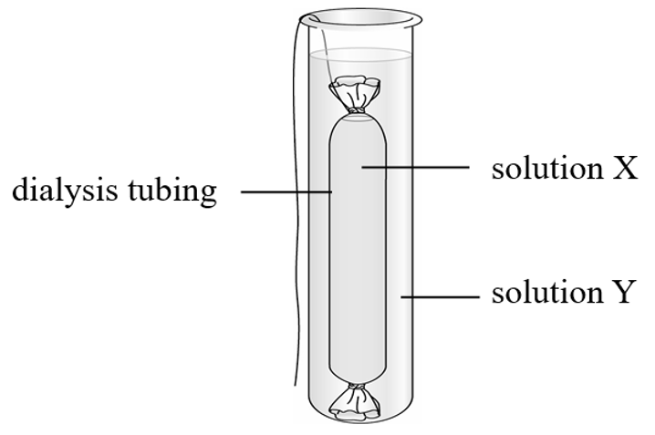
Fig 17 · Length experiment: Equal 5 cm long peeled potato strips were soaked in salt solutions (0.0–0.6 arbitrary units) for 2 hours; in hypertonic solutions water leaves by osmosis so strips become shorter and flaccid, while in hypotonic solutions water enters so strips stay longer or turgid. The mean length is unchanged at about 0.3 arbitrary units of salt — the isotonic point where there is no net water movement (same water potential as the potato tissue).


Most water absorption: large intestine 大腸.
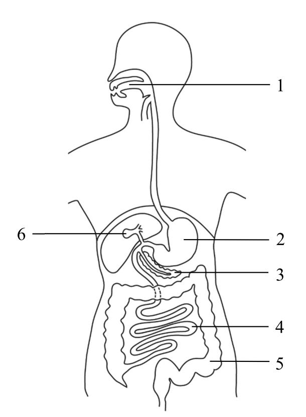
Solute does not cross the membrane in osmosis — only water net movement. When ψ is equal on both sides, osmosis stops (individual water molecules still move both ways).
Active transport 主動運輸
Uses energy from respiration 呼吸作用 (ATP) to change the shape of carrier proteins 載體蛋白 and move substances in the direction the cell needs — often against the concentration gradient.
| Soil nutrient vs root cell | Diffusion | Active transport |
|---|---|---|
| Soil nutrient conc. > cell (along gradient) | ✔ possible | ✔ (can also occur) |
| Soil nutrient conc. = cell | ✘ no gradient | ✔ still possible |
| Soil nutrient conc. < cell (against gradient) | ✘ | ✔ required |
| Soil nutrient conc. > cell + cyanide (respiration inhibitor) | Unaffected | ✘ stops — no energy |
Example: absorption of nitrates into root hair cells when soil concentration is low.

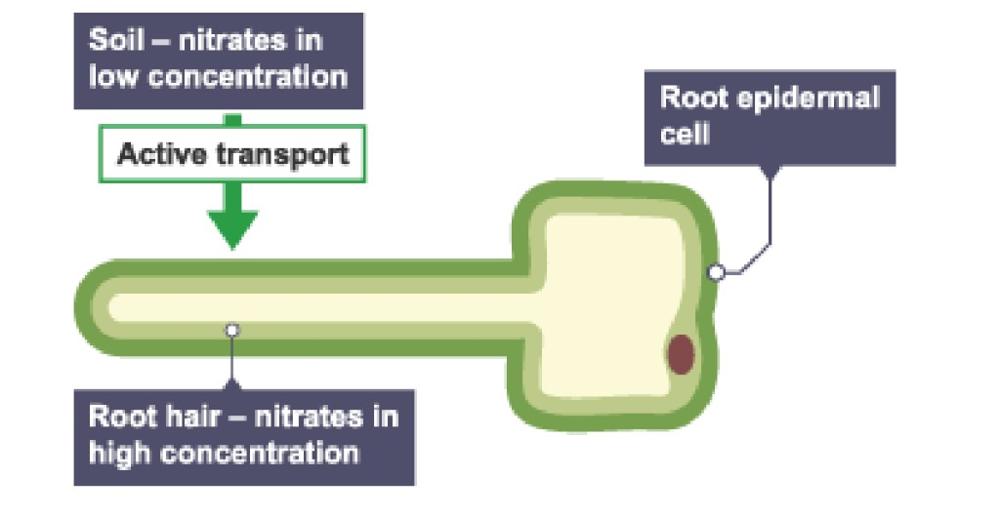
Fig 21 · Active transport (e.g. nitrates in root hairs when soil concentration is low) — requires carrier proteins and energy from respiration; stops if respiration is inhibited (e.g. cyanide).
Phagocytosis 吞噬作用
Engulfing 吞噬 large particles/food. Uses energy for membrane folding 膜折疊, enabled by membrane fluidity 流動性. Typical cargo: proteins and large particles (too large to transport by diffusion/active transport) — not glucose, O₂, or small ions (those use diffusion/active transport).
- 1Infolding 內陷 of membrane → pseudopodia 偽足 surround particle
- 2Particle is engulfed 吞噬
- 3Enclosed in vacuole 液泡 / vesicle 囊泡 inside cell
- 4Lysosome 溶酶體 (enzymes 酶) fuses with vacuole → catalyze digestion of the particle
- 5Digested products diffuse 擴散 into cytoplasm
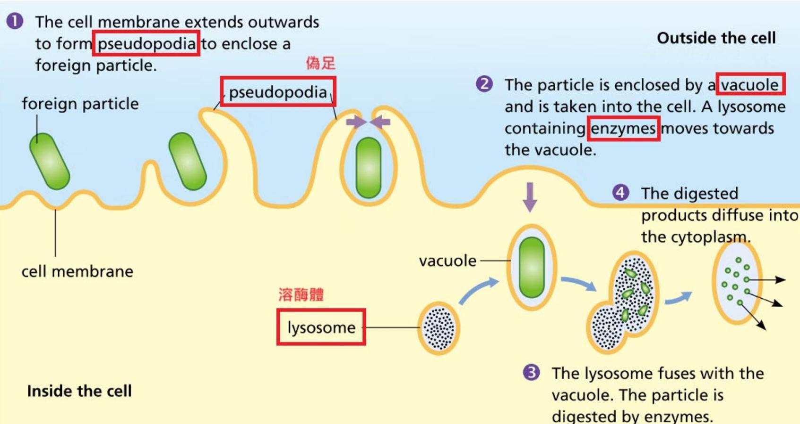

school HKDSE exam checklist
- Say “net movement” for osmosis and diffusion; molecules still move both ways.
- Osmosis needs a differentially permeable membrane and a water potential difference (notes: 差異滲透性; avoid “semi-permeable” alone).
- Channel = open pore; carrier = shape change (uses energy if active transport).
- Water moves high ψ → low ψ (toward more solute / lower water potential).
- Damaged membrane (“juice leaked”) → no longer differentially permeable.
- Phagocytosis needs membrane fluidity (folding). Amoeba MCQ: (2) and (3), not (1) alone.
-
RBC sucrose order: B > A > C (descending concentration).
Sucrose solution A — normal appearance · B — crenated (highest concentration) · C — swollen/haemolysed (lowest concentration). - Potato isotonic point: ~5.8% salt (mass graph) or 0.3 arbitrary units (length graph).
Use the download bar above for Word (.doc) or Print / Save PDF. Word includes diagrams where possible.
Back to top